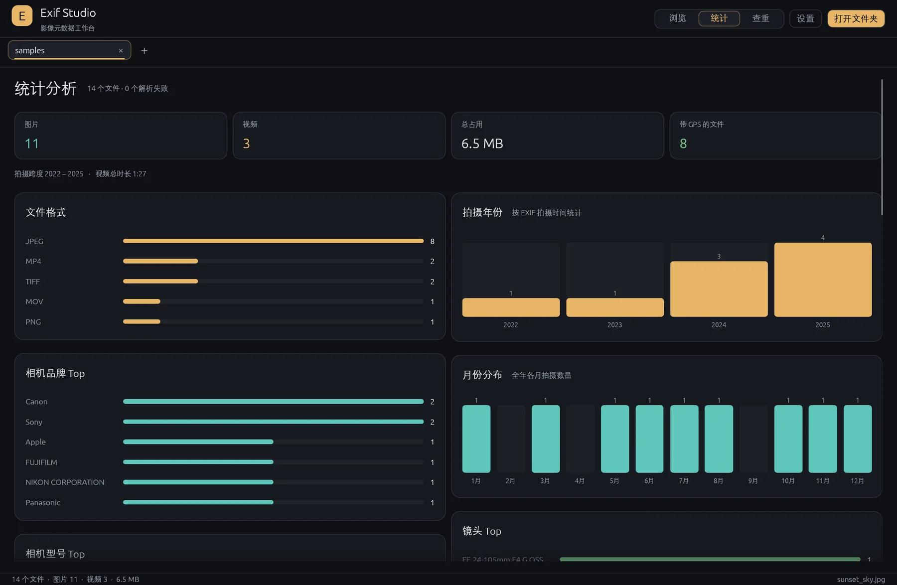
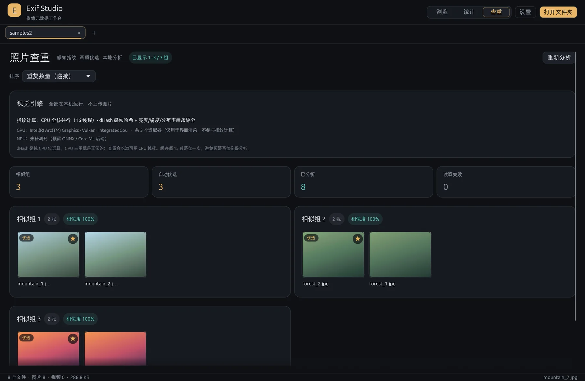

虚拟化浏览
多标签页、连续缩放、子目录分组和文件名/时间/分辨率排序。数万文件也只渲染当前可见行。
核心能力
功能围绕本地文件工作。缓存可以随时删除，照片和视频不会被移动或上传。
多标签页、连续缩放、子目录分组和文件名/时间/分辨率排序。数万文件也只渲染当前可见行。
相机、镜头、曝光、焦距、GPS 与拍摄时间。写入前备份，无法安全解析的结构直接拒绝写入。
本地 dHash 与画质评分自动分组，标出每组最佳一张。支持分页、瀑布流和时间轴跳转。
MP4/MOV 容器元数据、帧率、分辨率和封面。交给外部播放器前会先确认，不会误触跳走。
生成 LSB 水印 PNG 副本，不改原图。本机视觉索引支持截图、缩放和二次压缩后的识别。
可选的只读 HTTP 接口，仅监听 127.0.0.1，Bearer Token 鉴权，只返回已打开目录中的元数据。
工作方式
扫描、解码和查重都在 UI 线程之外。界面只轮询结果，并在必要时合并重绘。
发现阶段不读取文件元数据，每 180ms 推送一次进度。网络共享也能在 1 秒内看到数量。
最多 24 个线程读取大小、时间和 EXIF；视频容器由纯 Rust 解析器处理，结果按文件名顺序回填。
元数据、视觉指纹和缩略图分三层缓存。删除缓存只会触发重新读取，不影响原始文件。
界面
图表直接基于当前目录的扫描结果；重复组会显示相似度、张数和自动优选，不会自动删除任何照片。


性能基线
在一台 Windows 机器上通过 SMB 打开含 37,215 张图片、2,281 个视频的目录：约 37 秒完成第一次扫描，1 秒内出现发现进度；连续缩放窗口后，UI 线程仍保持毫秒级响应。具体数字会随网络和磁盘变化，但“发现与解析分离、缓存可丢弃”的结构不变。
构建
要求 Rust stable 1.85+。Windows 是主要开发和测试平台，macOS/Linux 共用同一套代码；Linux 需要常见的 X11/Wayland 桌面依赖和中文字体。
# 克隆并运行 git clone https://github.com/for404cat/exif-studio.git cd exif-studio cargo run --release -- "D:\Photos" # 生成测试素材（不提交） cargo run --example make_samples # 质量检查 cargo fmt --check cargo clippy --all-targets -- -D warnings cargo test --all-targets
继续阅读
功能说明之外，仓库还记录了线程模型、状态不变量、缓存失效规则和新增功能的操作步骤。